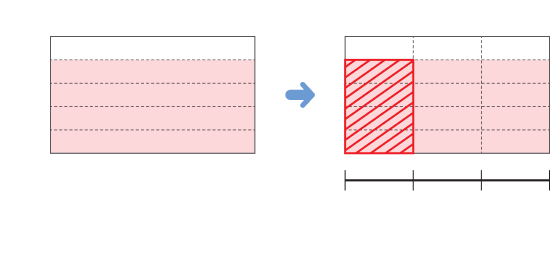

 1(t) 0 ÷3 0 13 1 빗금 친 부분은 45 t 의 13 만큼이네! 발전기 한 대에 나누어 넣은 가스의 양을 구하는 방법을 생 각해 보고 그림을 이용하여 알아보세요. 전체의45만큼을 똑같이 3으로 나눈 것 중 하나이므로 발전기 한 대에 나누어 넣은 가스의 양은415t입니다.
4 5 ÷3을 분수의 곱셈으로 나타내는 방법을 알아보세요. 4 5 ÷3의 몫은 4 5 를 3등분한 것 중의 하나이므로 4 5 의 1 입니다. 따라서 4 5 ÷3은 4 5 × 1 로 나타낼 수 있습니다.